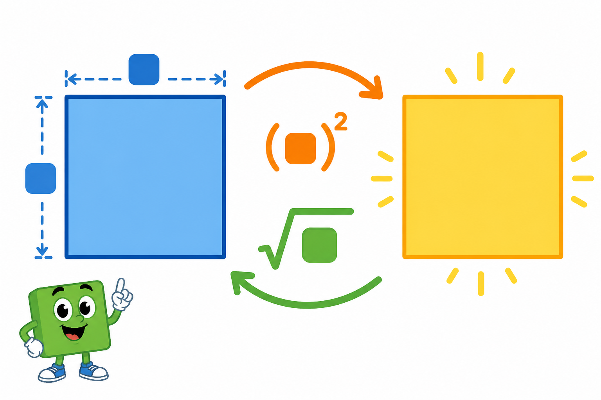

Co to jest? Що це?
Pierwiastek kwadratowy z liczby to taka liczba, której kwadrat daje tę pod pierwiastkiem.
Квадратний корінь з числа — таке число, квадрат якого дає те, що під коренем.
Jak w szkole? Як у школі?
√9 = 3, bo 3² = 9. W SP bierzemy nieujemny wynik.
√9 = 3, бо 3² = 9. У школі беремо невід'ємний результат.
Przykład z życia Приклад з життя
Pole kwadratu 9 m² — jaki bok? √9=3 m.
Площа квадрата 9 м² — який бік? √9=3 м.
√9 = 3